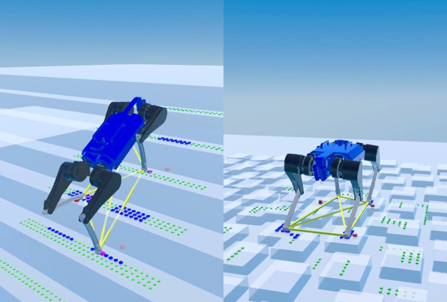

|
Wookjin Ahn I am a second-year Robotics Master's student at the Pusan National University, advised by Prof. Inho Lee. My research interests are in Legged Robots, Computer Vision and Optimal Control. I'm current focus is on vision-based locomotion for quadruped robots. |

|
Research |
|  |
Wookjin Ahn, Hosun Kang, Jaehoon An, Hwayoung Song, Hyeonje Cha, Inho Lee Submitted to XXX, 2023 Paper / Video |
|
Implement vision-based motion planning with model-based control for quadruped robots. / Video |
|
Implement 2.5D terrain mapping framework / Video |
Teaching |
|
Teaching Assistant, Fall 2022 |
|
Theme from Jon Barron's code. |